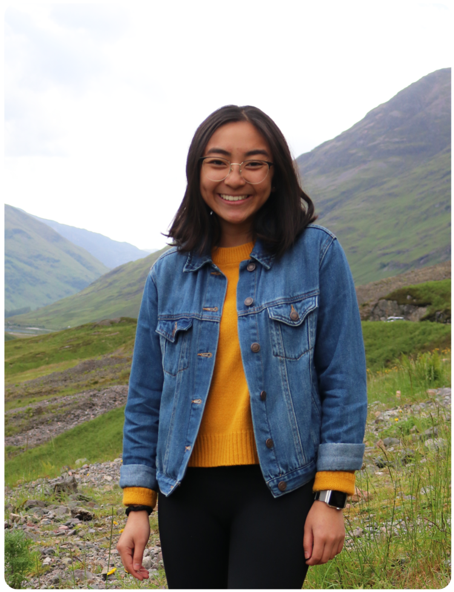

Hi, I'm Kaci!
I'm currently a senior at UT Austin, studying
Management Information Systems, Business in the Canfield Business Honors Program,
and Informatics.
I'm a designer, strategist, and creative technologist passionate about education, environmental sustainability, and social equality.
In my free time, you can find me reading a book, cooking something new, filming a short, or enjoying the outdoors!
Product Management Intern @ Redfin
collaborating with designers, engineers, and various stakeholders to improve mortgage efficiency through automation
Independent Study @ UT Austin
conducting research on learning models, classroom management and learning technologies, and gamification
Executive Board Member @ Product@TX
mentoring cohort of students with an interest in product management
Product Designer @ Develop for Good
designing and applying behavioral science at ideas42
to reduce recidivism at scale
Student Mentor @ Code Orange
teaching East Austin elementary and middle school students the fundamentals of coding through interactive projects
President @ Texas Convergent
led UT's first interdisciplinary entrepreneurial organization to equip students with the
necessary skills + resources to develop tech-powered products and drive the future of innovation
Operations Learning + Development Intern @ Apple
worked on improving development conversations by highlighting learning + development opportunities
using insights from user research
Business Development Intern @ Well Aware
developed content + social media strategy to help bring awareness
to water scarcity + sustainable clean water solutions in East Africa
Product Build Team Director @ Texas Convergent
co-directed Build Team program for +60 leads and members to develop MVPs for
personal finance and community tech products
Product Designer @ thousandthread
designed mobile app and website using insights collected from user
interviews and behavioral psychology theory
Designer + Strategist @ Hult Prize Accelerator
developed design + business strategy for Via, a youth-based tourism startup
co-founded by 7 other team members and myself
Sustainability Tech Product Build Team Lead @ Texas Convergent
guided +20 members in building sustainability-focused tech products
Studio Member @ Design for America
partnered with YMCA to design a solution that improves
lifeguard retention using design thinking techniques
EdTech and IoT Build Team Member @ Texas Convergent
built dynamic email templates and an automated Alexa Skills drink maker
Communications Chair @ Honors Business Association
led a production team to film and edit videos to recap and promote internal events
Layout Designer @ Spark Magazine
designed two layouts for UT’s student-run fashion publication
Campaign Visual Designer @ GenHERation
designed a bus wrap, stickers, flyers, and displays
for annual networking trip for over 500 high school and college women across the U.S.
UX Design Mentee @ projekt202
redesigned offline educational platform using user
research insights
HCI, future of education, creating short films, photography, biking, mixology, creator economy
double-wall glass coffee mugs, scandinavian design, authenticity, matcha soft serves, thoughtful people,
chicken & waffles, Figma, oddly specific Spotify playlists, Queen's Gambit, spontaneity, brunch,
il dolce far niente, New Yorker cartoons, Andy Matuschak's work
product packaging design, flavor combos, backpacks, mushroom gifs
mosquitoes, sock tans, poorly seasoned avocado toast, cookie-cutter neighborhoods, pocketless dresses
Adaptability is comfort. 7.17.21
No company is better than mediocre company.
Public libraries are the greatest gift to humanity.
Curiosity leads to experimentation. Experimentation is the foundation of innovation.
In startups, you have to be an inch deep and a mile wide. In established companies, you have to be a mile deep and an inch wide.
“To be nobody-but-yourself — in a world which is doing its best, night and day, to make you everybody else — means to fight the hardest battle which any human being can fight.”
– E.E. Cummings
“There is no human being from whom we cannot learn something if we are interested enough to dig deep.”
– Eleanor Roosevelt
“The purpose of life is to live it, to taste experience to the utmost, to reach out eagerly and without fear for newer and richer experience.”
– Eleanor Roosevelt